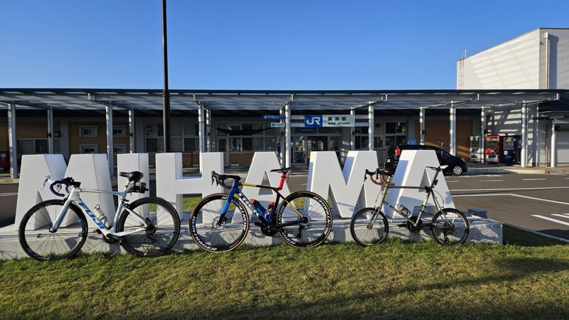
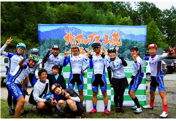
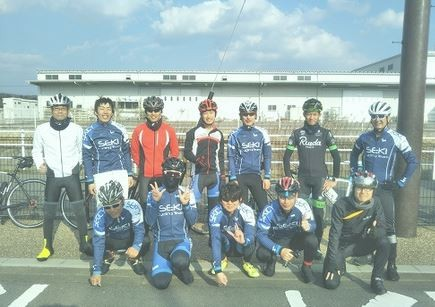
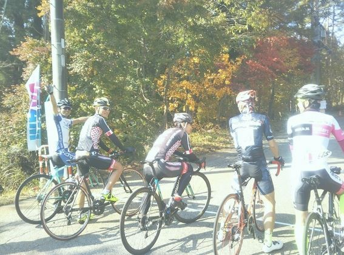
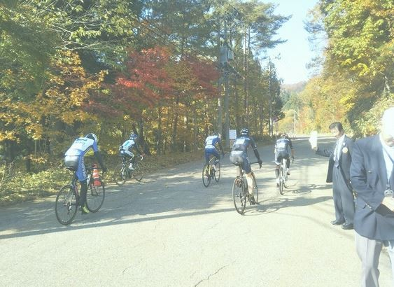
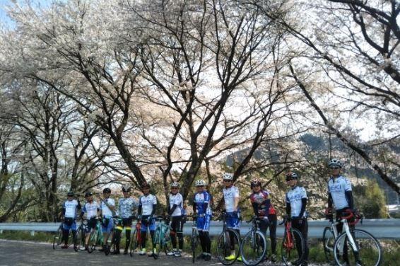
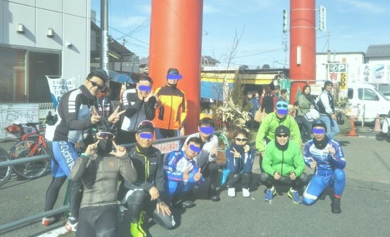
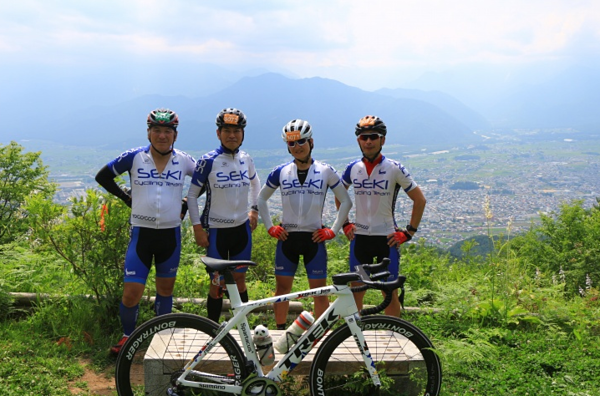
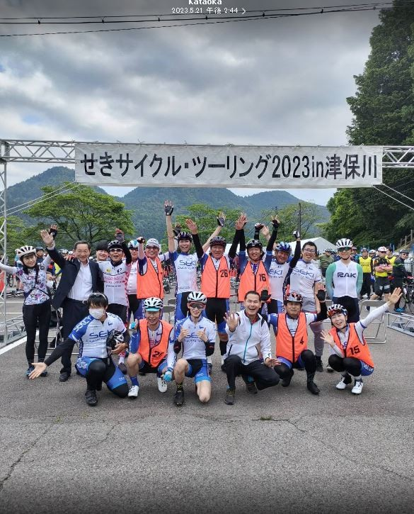

Event
せきサイクリングサークルで得られるすごいメリット！
1. 友達と知り合いがグッと増える！
- 大人になっても友達ができる: 年齢に関係なく、自転車好きという共通点だけで仲良くなれます。一生付き合える仲間が見つかるかもしれません。
- 知り合いがめちゃくちゃ増える: 学校以外で、いろいろな仕事や考え方を持つ人と出会えます。情報交換ができたり、困ったときに助け合える人が増えます。
2. 困っても大丈夫！助け合いと知恵の宝庫
- メカトラ（故障）のときも安心: パンクなどの故障で困ったとき、すぐに**工具を貸してもらえたり**、経験者が**修理を手伝ってくれます**。
- 知見（ちけん）がたくさん集まる: 楽な坂の登り方や、安全なブレーキのかけ方など、**サイクリングに関する役立つ知識**を教えてもらえます。愛車の整備の仕方も学べます。
3. 最高のルート情報が手に入る！
- 便利なルート情報がすぐ手に入る: 先輩たちが、関市周辺の**「絶景スポット」**や**「美味しいグルメのお店」**、そして**「事故が少ない安全な道」**をすべて知っています。最高のルートを迷わず走れます。
イベント実績（自由参加･無料）
- セキサイビワイチ（毎年）
 - 北アルプスグランフォンド
 - TOJ見学サイクリング
- ドラゴン退治九頭竜ライド
 - 白川郷ライド
 - ダイナランド戦士応援ライド
 - 郡上八幡桜ライド
 - 笠置山ぐるっと一周
- 御嶽山一周
- 美濃一周
- 真夏の郡上八幡ライド
- 板取ライド
- おちょぼ稲荷サイクリング
 - 秋の八百津ライド
- 北アルプス山麓グランフォンド遠征2016
 - 神渕サイクリング
- セキサイクルツーリング
 - 白川カレー食べ放題サイクリング
- 徳山ダムサイクリング
- せきサイビワイチ2024
- せきサイ秋の紅葉サイクリング
- 第28回秋の紅葉グルメライド